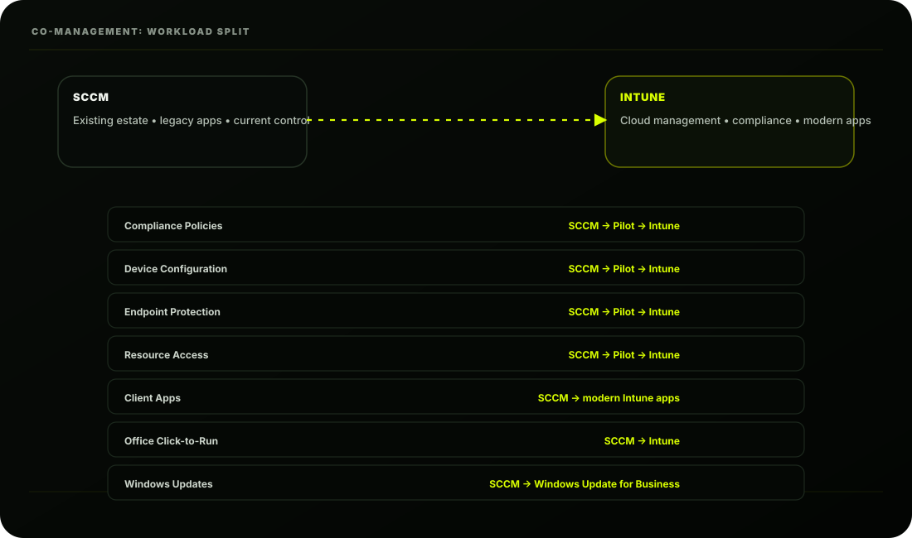
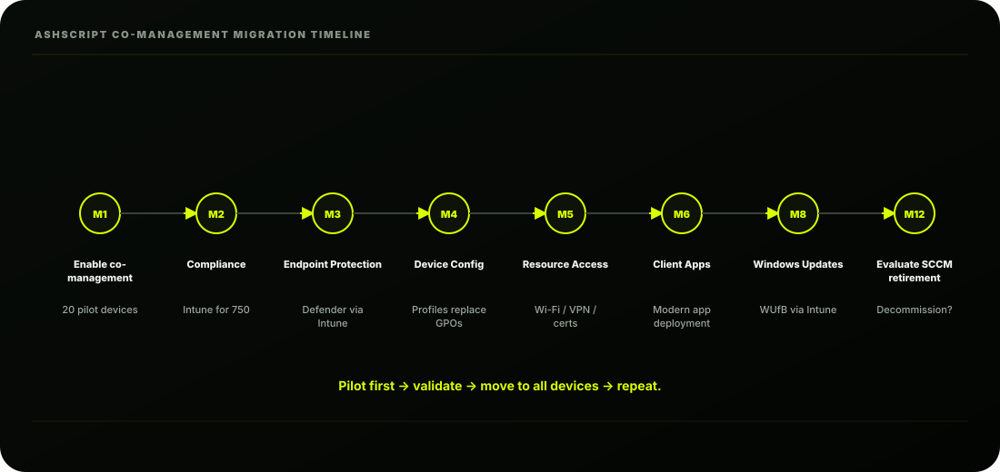

The Scene
Ashpak stares at the SCCM console. 750 devices. All healthy. All managed. Software deployments
running. Patch compliance at 94%. Years of carefully built task sequences, baselines, and collections.
His phone buzzes. It's Riya:
"Ashpak; the new laptops are great. Now I need the existing fleet in Intune too. But I'm not
authorising a re-imaging project. These machines are working. I don't want a single user
disrupted."
Ashpak types back:
"Co-management. Give me two weeks."
He puts the phone down and opens the Microsoft documentation. The plan is clear in his head. He's
not going to rip out SCCM. He's not going to reimage anything. He's going to run both SCCM and
Intune simultaneously; and gradually shift control from one to the other.
This is co-management.
What is Co-Management?
Co-management is Microsoft's answer to one of the most common real-world challenges in enterprise
IT:
"We have hundreds or thousands of devices managed by SCCM. We want to move to Intune. But
we can't do it overnight. How do we transition without disruption?"
Co-management is the bridge. It allows a Windows device to be simultaneously managed by both
SCCM and Intune, with you choosing which tool handles which responsibilities.
AshScript will use it to move workloads from SCCM to Intune over months, eventually retiring
SCCM once everything has migrated.
The Workloads: What Can Be Split
Co-management divides device management into workloads. Each workload can be assigned to
either SCCM or Intune independently:
group first, verify it works perfectly, then slide it to All devices. This is how Ashpak will migrate
every workload; pilot first, then production.

Prerequisites for Co-Management
Before Ashpak can enable co-management, the environment must meet several requirements:
| Area | Requirement |
|---|---|
| SCCM | Version 1710 or later (Ashpak is on 2303) |
| Windows devices | Windows 10 1709 or later |
| Device identity | Hybrid Entra Joined |
| Identity sync | Entra Connect Sync running |
| Licensing | Microsoft Intune licence (M365 E3) |
| MDM | Intune MDM Authority set |
| Remote management | Cloud Management Gateway (CMG) configured |
| Accounts | SCCM admin • Intune admin • Global Admin for initial setup |
Cloud Management Gateway (CMG): The Internet Bridge
Before getting into co-management setup, Ashpak must understand and configure the CMG. This is
what allows SCCM to manage devices over the internet; which is essential when employees work
from home.
CMG setup is a dedicated topic. For co-management, understand that CMG is required for
devices that are not always on the corporate network. For AshScript's laptop fleet where many
users work remotely, CMG is mandatory.
Enabling Co-Management: Step by Step
STEP 1: Enable Hybrid Entra Join for Existing Devices
Before co-management, AshScript's existing domain-joined laptops must become Hybrid Entra
Joined; registered in both on-prem AD and Entra ID.
Configure this via Entra Connect:
Verify with Group Policy:
STEP 2: Configure MDM Auto-Enrollment via Group Policy
This GPO tells Windows devices:
"Once you're Hybrid Entra Joined, automatically enroll in the MDM authority (Intune)."
Intune portal. But SCCM still manages them; enrollment just gives Intune visibility initially.
STEP 3: Enable Co-Management in SCCM
Now the critical step; enabling co-management in the SCCM console:
The Co-management Configuration Wizard opens:
STEP 4: Verify Co-Management is Working
In SCCM:
In Intune:
On a co-managed device:
AshScript's Co-Management Migration Timeline
Ashpak doesn't move everything to Intune at once. He follows a phased workload migration plan:
All workloads have moved to Intune
No complex legacy Win32 apps still need SCCM
OS deployment is handled by Autopilot
All devices are modern (Windows 10/11 Entra Joined) For many enterprises, SCCM co-exists
for years. Don't rush retirement.

The Co-Management Dashboard: Your Progress Tracker
SCCM provides a built-in dashboard that Ashpak checks weekly:
| Metric | Value |
|---|---|
| Co-managed | 750 |
| SCCM only | 0 |
| Entra Joined | 750 |
| Errors | 3 |
Warning: Common Co-Management Issues and Fixes
Issue 1: Devices Not Appearing as Co-Managed in Intune
Issue 2: Policy Conflict Between SCCM and Intune
Issue 3: CMG Not Working for Remote Devices
Co-Management vs Pure Intune: When to Use Which
Understanding this helps Ashpak explain the strategy to Riya:
| Co-management | Pure Intune (Autopilot) |
|---|---|
| For existing SCCM-managed devices | For new devices |
| Gradual workload transition | Full Intune from day one |
| Keeps SCCM capabilities during transition | No SCCM needed |
| Hybrid Entra Joined (domain + cloud) | Entra Joined (cloud only) |
| More complex to manage (two systems) | Simpler; one tool |
| Requires SCCM infrastructure | No on-prem infrastructure needed |
| Good for: migration path | Good for: net-new deployments |
AshScript's Current State After Lesson 3.3
| Concept | Remember This |
|---|---|
| Co-management purpose | Bridge SCCM → Intune; gradual transition |
| Workloads | Each workload assigned to SCCM or Intune independently |
| Pilot setting | Move workload to Intune for pilot group first |
| Hybrid Entra Join | Existing domain devices registered in Entra ID |
| CMG | Enables SCCM management for remote devices |
| Migration principle | Pilot → validate → move to all devices |
Key Concepts to Lock In
| Concept | Remember This |
|---|---|
| Co-management purpose | Bridge SCCM → Intune; gradual transition |
| Workloads | Each workload assigned to SCCM or Intune independently |
| Pilot setting | Move workload to Intune for pilot group first |
| Hybrid Entra Join | Existing domain devices registered in Entra ID |
| CMG | Enables SCCM management for remote devices |